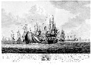

Gezicht van ’s Lands schip de Batavier, in een reddeloozen staat leggende te loefwaars van ’s Lands vloot. E. Hoogerheyden del., R. Muys sculp. 1784. Ets en gravure, gekleurd, 420 x 600 mm. Amsterdam, F.W. Greebe/Middelburg, E. Hoogerheyden, 1784. -- (Prentenkabinet, S7030/12)
Door de tijdsgrenzen aan deze expositie gesteld brengt de laatste verbeelding van een oorlogshandeling ons niet verder dan 1781, naar een situatie die zich voordeed aan het slot van de befaamde slag op de Doggersbank. Die slag was het belangrijkste militaire evenement in de Vierde Engelse Oorlog. Nederlandse en Engelse oorlogsbodems, van weerszijden vooral dienstdoend als escorte voor handelsschepen, troffen elkaar buitengaats. Aan het einde van het gevecht konden de Engelsen hun tocht naar het moederland voortzetten, mét hun handelsvloot. De Nederlandse schout-bij-nacht Zoutman moest zijn gehavende schepen in veiligheid brengen, terwijl de vrachtschepen die hij naar de Oostzee had zullen begeleiden, méé moesten terugkeren.
Vergeleken met de successen die onze zeehelden een eeuw tevoren hadden weten te bevechten, mag men het een schamel resultaat noemen, maar Zoutman werd alom geprezen.
De slag zelve wordt ons niet getoond, maar een spannend moment na afloop. Bijna dreigde het op een tweede handgemeen uit te lopen toen een van de Hollandse schepen vlagde dat het zwaar beschadigd was en assistentie nodig had. De Engelsen maakten al aanstalten het aan te grijpen, maar de kapitein van het Nederlandse schip hees de Prinsenvlag, waarop de Engelsen zich bedachten. Het onderschrift verklaart ons deze situatie.
Na de reeks zeventiende-eeuwse oorlogsuitbeeldingen in deze presentatie kan het ons opvallen hoe weinig ‘visuele informatie’ over de gebeurtenis deze achttiende-eeuwse prent eigenlijk bevat. Het is waar: op het eerste gezicht komt de voorstelling ‘natuurlijk’ op ons over -- alsof we vanuit een boot op afstand het tafereel (een toevalligerwijs wel erg fraaie compositie à la Willem van de Velde!) gadeslaan. Maar de rangschikking van de schepen is in de uit dien hoofde gekozen compositie ternauwernood drager van een betekenis en zeker niet van een die in het bijschrift wordt verklaard.
Het moge duidelijk zijn, door deze afsluiter van de reeks krijgsprenten: een ‘naar de natuur’ getekende uitbeelding doet aan een oorlogssituatie niet per se recht wedervaren. De zeventiende-eeuwers leerden ons zien dat een meer geformaliseerde kijk effectiever kan zijn.
Literatuur
- F. Muller, De Nederlandsche geschiedenis in platen. Beredeneerde beschrijving van Nederlandsche historieplaten, zinneprenten en historische kaarten. Amsterdam 1863-1882. 4 dln, II, nr. 4425.
- G. van Rijn, Atlas Van Stolk. Katalogus der historie-, spot- en zinneprenten betrekkelijk de geschiedenis van Nederland, verzameld door A. van Stolk Cz. Amsterdam 1895-1933. 10 dln, V, nr. 4369.
| vorige pagina | top pagina |